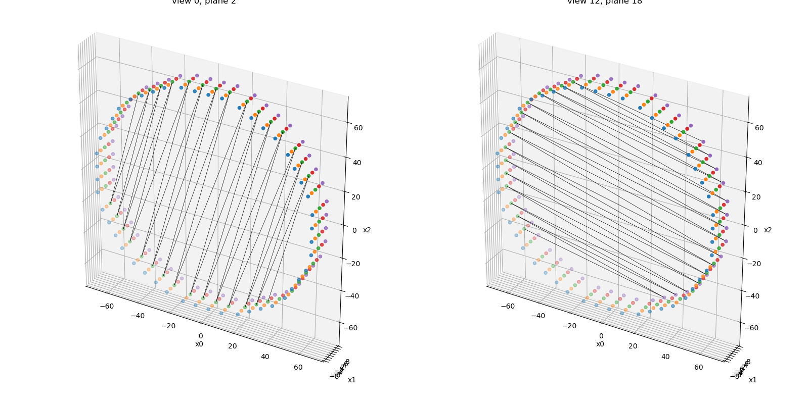
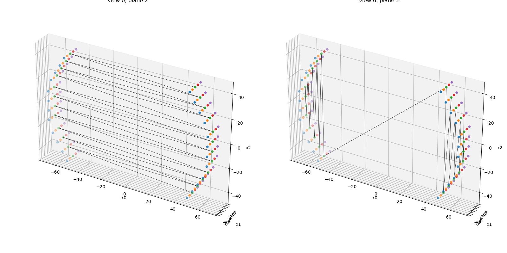

Note
Go to the end to download the full example code.
LOR descriptors and sinogram definition
In a scanner with “cylindrical symmetry”, all possible lines of response (LORs)
between two LOR endpoints can be sorted into a sinogram containing a radial,
view and plane dimension.
This example shows how this can be done using the RegularPolygonPETLORDescriptor
Tip
parallelproj is python array API compatible meaning it supports different
array backends (e.g. numpy, cupy, torch, …) and devices (CPU or GPU).
Choose your preferred array API xp and device dev below.
20 import array_api_compat.numpy as xp
21
22 # import array_api_compat.cupy as xp
23 # import array_api_compat.torch as xp
24
25 import parallelproj
26 import matplotlib.pyplot as plt
27
28 # choose a device (CPU or CUDA GPU)
29 if "numpy" in xp.__name__:
30 # using numpy, device must be cpu
31 dev = "cpu"
32 elif "cupy" in xp.__name__:
33 # using cupy, only cuda devices are possible
34 dev = xp.cuda.Device(0)
35 elif "torch" in xp.__name__:
36 # using torch valid choices are 'cpu' or 'cuda'
37 dev = "cuda"
setup a small regular polygon PET scanner with 5 rings (polygons)
Defining a sinogram using an LOR descriptor
RegularPolygonPETLORDescriptor can be used to order all possible
combinations of LOR endpoints into a sinogram with a radial, view and plane dimension.
max_ring_difference defines the maximum ring (polygon) difference between of a valid LOR and radial_trim defines the number of radial bins to be trimmed from the sinogram edges.
sinogram_order of type SinogramSpatialAxisOrder defines the order of the sinogram dimensions
(e.g. RVP -> [radial, view, plane], PRV -> [plane, radial, view])
68 lor_desc1 = parallelproj.RegularPolygonPETLORDescriptor(
69 scanner,
70 radial_trim=10,
71 max_ring_difference=2,
72 sinogram_order=parallelproj.SinogramSpatialAxisOrder.RVP,
73 )
74
75 print(lor_desc1)
76 print(f"sinogram order: {lor_desc1.sinogram_order.name}")
77 print(f"sinogram shape: {lor_desc1.spatial_sinogram_shape}")
78 print(
79 f"num rad: {lor_desc1.num_rad} num views: {lor_desc1.num_views} num planes: {lor_desc1.num_planes}"
80 )
81 print(
82 f"radial axis num: {lor_desc1.radial_axis_num} view axis num: {lor_desc1.view_axis_num} plane axis num: {lor_desc1.plane_axis_num}"
83 )
RegularPolygonPETLORDescriptor with spatial sinogram shape (29R, 24V, 19P)
sinogram order: RVP
sinogram shape: (29, 24, 19)
num rad: 29 num views: 24 num planes: 19
radial axis num: 0 view axis num: 1 plane axis num: 2
Define a 2nd LOR descriptor with sinogram order “PRV”
88 lor_desc2 = parallelproj.RegularPolygonPETLORDescriptor(
89 scanner,
90 radial_trim=10,
91 max_ring_difference=2,
92 sinogram_order=parallelproj.SinogramSpatialAxisOrder.PRV,
93 )
94
95 print(lor_desc2)
96 print(f"sinogram order: {lor_desc2.sinogram_order.name}")
97 print(f"sinogram shape: {lor_desc2.spatial_sinogram_shape}")
98 print(
99 f"num rad: {lor_desc2.num_rad} num views: {lor_desc2.num_views} num planes: {lor_desc2.num_planes}"
100 )
101 print(
102 f"radial axis num: {lor_desc2.radial_axis_num} view axis num: {lor_desc2.view_axis_num} plane axis num: {lor_desc2.plane_axis_num}"
103 )
RegularPolygonPETLORDescriptor with spatial sinogram shape (19P, 29R, 24V)
sinogram order: PRV
sinogram shape: (19, 29, 24)
num rad: 29 num views: 24 num planes: 19
radial axis num: 1 view axis num: 2 plane axis num: 0
Obtaining world coordinates of LOR start and endpoints
Every LOR is defined by two LOR endpoints.
RegularPolygonPETLORDescriptor.get_lor_coordinates() can be used to
to obtain the 3 world coordinates of them (for all views or a subset of
views).
114 lor_start_points1, lor_end_points1 = lor_desc1.get_lor_coordinates()
115 print(lor_start_points1.shape, lor_end_points1.shape)
116
117 # print the start and end coordinates of the LOR corresponding to the 1st view
118 # the 2nd plane and the 3rd radial bin
119 print(lor_start_points1[2, 0, 1, :])
120 print(lor_end_points1[2, 0, 1, :])
(29, 24, 19, 3) (29, 24, 19, 3)
[54.29165 -4. 35.9641 ]
[ 29.03592 -4. -58.291637]
Do the same for the 2nd LOR descriptor that uses sinogram order “PRV” The indexing has to be different compared to “RVP” to get the same LOR.
126 lor_start_points2, lor_end_points2 = lor_desc2.get_lor_coordinates()
127 print(lor_start_points2.shape, lor_end_points2.shape)
128
129 # print the start and end coordinates of the LOR corresponding to the 1st view
130 # the 2nd plane and the 3rd radial bin
131 print(lor_start_points2[1, 2, 0, :])
132 print(lor_end_points2[1, 2, 0, :])
(19, 29, 24, 3) (19, 29, 24, 3)
[54.29165 -4. 35.9641 ]
[ 29.03592 -4. -58.291637]
Definition of plane numbers
The plane number definition corresponds to a span 1 Michelogram.
plane num: 00 - start ring 0 - end ring 0 - ring diff. 0
plane num: 01 - start ring 1 - end ring 1 - ring diff. 0
plane num: 02 - start ring 2 - end ring 2 - ring diff. 0
plane num: 03 - start ring 3 - end ring 3 - ring diff. 0
plane num: 04 - start ring 4 - end ring 4 - ring diff. 0
plane num: 05 - start ring 0 - end ring 1 - ring diff. 1
plane num: 06 - start ring 1 - end ring 2 - ring diff. 1
plane num: 07 - start ring 2 - end ring 3 - ring diff. 1
plane num: 08 - start ring 3 - end ring 4 - ring diff. 1
plane num: 09 - start ring 1 - end ring 0 - ring diff. -1
plane num: 10 - start ring 2 - end ring 1 - ring diff. -1
plane num: 11 - start ring 3 - end ring 2 - ring diff. -1
plane num: 12 - start ring 4 - end ring 3 - ring diff. -1
plane num: 13 - start ring 0 - end ring 2 - ring diff. 2
plane num: 14 - start ring 1 - end ring 3 - ring diff. 2
plane num: 15 - start ring 2 - end ring 4 - ring diff. 2
plane num: 16 - start ring 2 - end ring 0 - ring diff. -2
plane num: 17 - start ring 3 - end ring 1 - ring diff. -2
plane num: 18 - start ring 4 - end ring 2 - ring diff. -2
Visualize the defined LOR endpoints
RegularPolygonPETScannerGeometry.show_lor_endpoints() can be used
to visualize the defined LOR endpoints. Note that a zig-zag sampling pattern
is used to define a view.
155 fig = plt.figure(figsize=(16, 8), tight_layout=True)
156 ax1 = fig.add_subplot(121, projection="3d")
157 ax2 = fig.add_subplot(122, projection="3d")
158 scanner.show_lor_endpoints(ax1)
159 lor_desc1.show_views(
160 ax1,
161 views=xp.asarray([0], device=dev),
162 planes=xp.asarray([num_rings // 2], device=dev),
163 lw=0.5,
164 color="k",
165 )
166 ax1.set_title(f"view 0, plane {num_rings // 2}")
167 scanner.show_lor_endpoints(ax2)
168 lor_desc1.show_views(
169 ax2,
170 views=xp.asarray([lor_desc1.num_views // 2], device=dev),
171 planes=xp.asarray([lor_desc1.num_planes - 1], device=dev),
172 lw=0.5,
173 color="k",
174 )
175 ax2.set_title(f"view {lor_desc1.num_views // 2}, plane {lor_desc1.num_planes - 1}")
176 fig.show()

Defining sinograms in open PET scanner geometries
RegularPolygonPETLORDescriptor can also be used with
“open” PET scanner geometries. Note, however, that the definition
of “views” is not trivial due to the presence of “missing” sides (gaps).
The view definition still uses the “zig-zag” sampling which leads to
unconvential (very non-parallel) views in the sinogram as shown below.
188 open_scanner = parallelproj.RegularPolygonPETScannerGeometry(
189 xp,
190 dev,
191 radius=65.0,
192 num_sides=6,
193 num_lor_endpoints_per_side=4,
194 lor_spacing=8.0,
195 ring_positions=xp.linspace(-8, 8, num_rings),
196 symmetry_axis=1,
197 phis=(2 * xp.pi / 12) * xp.asarray([-1, 0, 1, 5, 6, 7]),
198 )
199
200 open_lor_desc = parallelproj.RegularPolygonPETLORDescriptor(
201 open_scanner,
202 radial_trim=1,
203 sinogram_order=parallelproj.SinogramSpatialAxisOrder.RVP,
204 )
205
206 fig2 = plt.figure(figsize=(16, 8), tight_layout=True)
207 ax2a = fig2.add_subplot(121, projection="3d")
208 ax2b = fig2.add_subplot(122, projection="3d")
209 open_scanner.show_lor_endpoints(ax2a)
210 open_lor_desc.show_views(
211 ax2a,
212 views=xp.asarray([0], device=dev),
213 planes=xp.asarray([num_rings // 2], device=dev),
214 lw=0.5,
215 color="k",
216 )
217 ax2a.set_title(f"view 0, plane {num_rings // 2}")
218 open_scanner.show_lor_endpoints(ax2b)
219 open_lor_desc.show_views(
220 ax2b,
221 views=xp.asarray([open_lor_desc.num_views // 2], device=dev),
222 planes=xp.asarray([num_rings // 2], device=dev),
223 lw=0.5,
224 color="k",
225 )
226 ax2b.set_title(f"view {open_lor_desc.num_views // 2}, plane {num_rings // 2}")
227 fig2.show()

Total running time of the script: (0 minutes 0.551 seconds)
Related examples